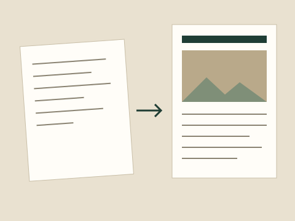

Bring your notes and photographs. Get a report ready to review.
Quillpage arranges what you already have into a clean, printable report with a cover, headings, captions and page layout. You stay in control of every word.

1
Add your notes
Type or paste what you wrote at the event, plus any quotations you want to keep exactly.
2
Upload photographs
Add pictures and write a caption for each. We never guess who is in a photo.
3
Review and download
Edit the text on the page, then save it as a PDF from your device.
Your facts stay yours. Quillpage does not invent names, dates, figures or quotes. Anything missing is highlighted so you can fill it in.